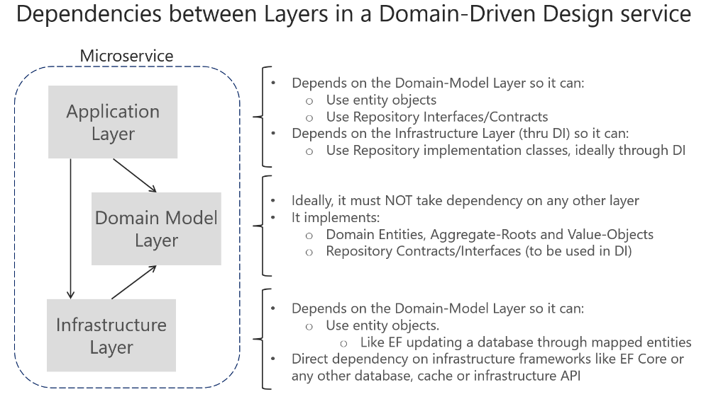

Tackle Business Complexity in a Microservice with DDD and CQRS Patterns
Design a domain model for each microservice or Bounded Context that reflects understanding of the business domain.
This section focuses on more advanced microservices that you implement when you need to tackle complex subsystems, or microservices derived from the knowledge of domain experts with ever-changing business rules. The architecture patterns used in this section are based on domain-driven design (DDD) and Command and Query Responsibility Segregation (CQRS) approaches, as illustrated in Figure 7-1.
Figure 7-1. External microservice architecture versus internal architecture patterns for each microservice
However, most of the techniques for data driven microservices, such as how to implement an ASP.NET Core Web API service or how to expose Swagger metadata with Swashbuckle or NSwag, are also applicable to the more advanced microservices implemented internally with DDD patterns. This section is an extension of the previous sections, because most of the practices explained earlier also apply here or for any kind of microservice.
This section first provides details on the simplified CQRS patterns used in the eShopOnContainers reference application. Later, you will get an overview of the DDD techniques that enable you to find common patterns that you can reuse in your applications.
DDD is a large topic with a rich set of resources for learning. You can start with books like Domain-Driven Design by Eric Evans and additional materials from Vaughn Vernon, Jimmy Nilsson, Greg Young, Udi Dahan, Jimmy Bogard, and many other DDD/CQRS experts. But most of all you need to try to learn how to apply DDD techniques from the conversations, whiteboarding, and domain modeling sessions with the experts in your concrete business domain.
CQRS is an architectural pattern that separates the models for reading and writing data. The related term Command Query Separation (CQS) was originally defined by Bertrand Meyer in his book Object Oriented Software Construction. The basic idea is that you can divide a system’s operations into two sharply separated categories:
CQS is a simple concept—it is about methods within the same object being either queries or commands. Each method either returns state or mutates state, but not both. Even a single repository pattern object can comply with CQS. CQS can be considered a foundational principle for CQRS.
Command and Query Responsibility Segregation (CQRS) was introduced by Greg Young and strongly promoted by Udi Dahan and others. It is based on the CQS principle, although it is more detailed. It can be considered a pattern based on commands and events plus optionally on asynchronous messages. In many cases, CQRS is related to more advanced scenarios, like having a different physical database for reads (queries) than for writes (updates). Moreover, a more evolved CQRS system might implement Event-Sourcing (ES) for your updates database, so you would only store events in the domain model instead of storing the current-state data. However, this is not the approach used in this guide; we are using the simplest CQRS approach, which consists of just separating the queries from the commands.
The separation aspect of CQRS is achieved by grouping query operations in one layer and commands in another layer. Each layer has its own data model (note that we say model, not necessarily a different database) and is built using its own combination of patterns and technologies. More importantly, the two layers can be within the same tier or microservice, as in the example (ordering microservice) used for this guide. Or they could be implemented on different microservices or processes so they can be optimized and scaled out separately without affecting one another.
CQRS means having two objects for a read/write operation where in other contexts there is one. There are reasons to have a denormalized reads database, which you can learn about in more advanced CQRS literature. But we are not using that approach here, where the goal is to have more flexibility in the queries instead of limiting the queries with constraints from DDD patterns like aggregates.
An example of this kind of service is the ordering microservice from the eShopOnContainers reference application. This service implements a microservice based on a simplified CQRS approach. It uses a single data source or database, but two logical models plus DDD patterns for the transactional domain, as shown in Figure 7-2.

Figure 7-2. Simplified CQRS- and DDD-based microservice
The application layer can be the Web API itself. The important design aspect here is that the microservice has split the queries and ViewModels (data models especially created for the client applications) from the commands, domain model, and transactions following the CQRS pattern. This approach keeps the queries independent from restrictions and constraints coming from DDD patterns that only make sense for transactions and updates, as explained in later sections.
The design of the ordering microservice at the eShopOnContainers reference application is based on CQRS principles. However, it uses the simplest approach, which is just separating the queries from the commands and using the same database for both actions.
The essence of those patterns, and the important point here, is that queries are idempotent: no matter how many times you query a system, the state of that system will not change. You could even use a different “reads” data model than the transactional logic “writes” domain model, although the ordering microservices is using the same database. Hence this is a simplified CQRS approach.
On the other hand, commands, which trigger transactions and data updates, change state in the system. With commands, you need to be careful when dealing with complexity and ever-changing business rules. This is the where you want to apply DDD techniques to have a better modeled system.
The DDD patterns presented in this guide should not be applied universally. They introduce constraints on your design. Those constraints provide benefits such as higher quality over time, especially in commands and other code that modifies system state. However, those constraints add complexity with fewer benefits for reading and querying data.
One such pattern is the Aggregate pattern, which we examine more in later sections. Briefly, in the Aggregate pattern, you treat many domain objects as a single unit as a result of their relationship in the domain. You might not always gain advantages from this pattern in queries; it can increase the complexity of query logic. For read-only queries, you do not get the advantages of treating multiple objects as a single Aggregate. You only get the complexity.
As shown in Figure 7-2, this guide suggests using DDD patterns only in the transactional/updates area of your microservice (that is, as triggered by commands). Queries can follow a simpler approach and should be separated from commands, following a CQRS approach.
For implementing the “queries side”, you can choose between many approaches, from your full-blown ORM like EF Core, AutoMapper projections, stored procedures, views, materialized views or a micro ORM.
In this guide and in eShopOnContainers (specifically the ordering microservice) we chose to implement straight queries using a micro ORM like Dapper. This lets you implement any query based on SQL statements to get the best performance, thanks to a light framework with very little overhead.
Note that when you use this approach, any updates to your model that impact how entities are persisted to a SQL database also need separate updates to SQL queries used by Dapper or any other separate (non-EF) approaches to querying.
It’s important to understand that CQRS and most DDD patterns (like DDD layers or a domain model with aggregates) are not architectural styles, but only architecture patterns. Microservices, SOA, and event-driven architecture (EDA) are examples of architectural styles. They describe a system of many components, such as many microservices. CQRS and DDD patterns describe something inside a single system or component; in this case, something inside a microservice.
Different Bounded Contexts (BCs) will employ different patterns. They have different responsibilities, and that leads to different solutions. It is worth emphasizing that forcing the same pattern everywhere leads to failure. Do not use CQRS and DDD patterns everywhere. Many subsystems, BCs, or microservices are simpler and can be implemented more easily using simple CRUD services or using another approach.
There is only one application architecture: the architecture of the system or end-to-end application you are designing (for example, the microservices architecture). However, the design of each Bounded Context or microservice within that application reflects its own tradeoffs and internal design decisions at an architecture patterns level. Do not try to apply the same architectural patterns like CQRS or DDD everywhere.
For reads/queries, the ordering microservice from the eShopOnContainers reference application implements the queries independently from the DDD model and transactional area. This was done primarily because the demands for queries and for transactions are drastically different. Writes execute transactions that must be compliant with the domain logic. Queries, on the other hand, are idempotent and can be segregated from the domain rules.
The approach is simple, as shown in Figure 7-3. The API interface is implemented by the Web API controllers using any infrastructure, such as a micro Object Relational Mapper (ORM) like Dapper, and returning dynamic ViewModels depending on the needs of the UI applications.
Figure 7-3. The simplest approach for queries in a CQRS microservice
This is the simplest possible approach for queries. The query definitions query the database and return a dynamic ViewModel built on the fly for each query. Since the queries are idempotent, they won’t change the data no matter how many times you run a query. Therefore, you don’t need to be restricted by any DDD pattern used in the transactional side, like aggregates and other patterns, and that is why queries are separated from the transactional area. You simply query the database for the data that the UI needs and return a dynamic ViewModel that does not need to be statically defined anywhere (no classes for the ViewModels) except in the SQL statements themselves.
Since this is a simple approach, the code required for the queries side (such as code using a micro ORM like Dapper) can be implemented within the same Web API project. Figure 7-4 shows this. The queries are defined in the Ordering.API microservice project within the eShopOnContainers solution.
Figure 7-4. Queries in the Ordering microservice in eShopOnContainers
Since the queries are performed to obtain the data needed by the client applications, the returned type can be specifically made for the clients, based on the data returned by the queries. These models, or Data Transfer Objects (DTOs), are called ViewModels.
The returned data (ViewModel) can be the result of joining data from multiple entities or tables in the database, or even across multiple aggregates defined in the domain model for the transactional area. In this case, because you are creating queries independent of the domain model, the aggregates boundaries and constraints are completely ignored and you’re free to query any table and column you might need. This approach provides great flexibility and productivity for the developers creating or updating the queries.
The ViewModels can be static types defined in classes. Or they can be created dynamically based on the queries performed (as is implemented in the ordering microservice), which is very agile for developers.
You can use any micro ORM, Entity Framework Core, or even plain ADO.NET for querying. In the sample application, Dapper was selected for the ordering microservice in eShopOnContainers as a good example of a popular micro ORM. It can run plain SQL queries with great performance, because it’s a very light framework. Using Dapper, you can write a SQL query that can access and join multiple tables.
Dapper is an open-source project (original created by Sam Saffron), and is part of the building blocks used in Stack Overflow. To use Dapper, you just need to install it through the Dapper NuGet package, as shown in the following figure:
You also need to add a using statement so your code has access to the Dapper extension methods.
When you use Dapper in your code, you directly use the SqlConnection class available in the System.Data.SqlClient namespace. Through the QueryAsync method and other extension methods that extend the SqlConnection class, you can simply run queries in a straightforward and performant way.
When returning ViewModels from the server-side to client apps, you can think about those ViewModels as DTOs (Data Transfer Objects) that can be different to the internal domain entities of your entity model because the ViewModels hold the data the way the client app needs. Therefore, in many cases, you can aggregate data coming from multiple domain entities and compose the ViewModels precisely according to how the client app needs that data.
Those ViewModels or DTOs can be defined explicitly (as data holder classes) like the OrderSummary class shown in a later code snippet, or you could just return dynamic ViewModels or dynamic DTOs simply based on the attributes returned by your queries, as a dynamic type.
As shown in the following code, a ViewModel can be directly returned by the queries by just returning a dynamic type that internally is based on the attributes returned by a query. That means that the subset of attributes to be returned is based on the query itself. Therefore, if you add a new column to the query or join, that data is dynamically added to the returned ViewModel.
The important point is that by using a dynamic type, the returned collection of data is dynamically assembled as the ViewModel.
Pros: This approach reduces the need to modify static ViewModel classes whenever you update the SQL sentence of a query, making this design approach pretty agile when coding, straightforward, and quick to evolve in regard to future changes.
Cons: In the long term, dynamic types can negatively impact the clarity and the compatibility of a service with client apps. In addition, middleware software like Swashbuckle cannot provide the same level of documentation on returned types if using dynamic types.
Pros: Having static predefined ViewModel classes, like “contracts” based on explicit DTO classes, is definitely better for public APIs but also for long term microservices, even if they are only used by the same application.
If you want to specify response types for Swagger, you need to use explicit DTO classes as the return type. Therefore, predefined DTO classes allow you to offer richer information from Swagger. That improves the API documentation and compatibility when consuming an API.
Cons: As mentioned earlier, when updating the code, it takes some more steps to update the DTO classes.
Tip based on our experience: In the queries implemented at the Ordering microservice in eShopOnContainers, we started developing by using dynamic ViewModels as it was very straightforward and agile on the early development stages. But, once the development was stabilized, we chose to refactor the APIs and use static or pre-defined DTOs for the ViewModels, because it is clearer for the microservice’s consumers to know explicit DTO types, used as “contracts”.
In the following example, you can see how the query is returning data by using an explicit ViewModel DTO class: the OrderSummary class.
Developers consuming web APIs and microservices are most concerned with what is returned — specifically response types and error codes (if not standard). These are handled in the XML comments and data annotations.
Without proper documentation in the Swagger UI, the consumer lacks knowledge of what types are being returned or what HTTP codes can be returned. That problem is fixed by adding the ProducesResponseTypeAttribute, so Swashbuckle can generate richer information about the API return model and values, as shown in the following code:
However, the ProducesResponseType attribute cannot use dynamic as a type but requires to use explicit types, like the OrderSummary ViewModel DTO, shown in the following example:
This is another reason why explicit returned types are better than dynamic types, in the long term. When using the ProducesResponseType attribute, you can also specify what is the expected outcome in regards possible HTTP errors/codes, like 200, 400, etc.
In the following image, you can see how Swagger UI shows the ResponseType information.
Figure 7-5. Swagger UI showing response types and possible HTTP status codes from a Web API
You can see in the image above some example values based on the ViewModel types plus the possible HTTP status codes that can be returned.
Domain-driven design (DDD) advocates modeling based on the reality of business as relevant to your use cases. In the context of building applications, DDD talks about problems as domains. It describes independent problem areas as Bounded Contexts (each Bounded Context correlates to a microservice), and emphasizes a common language to talk about these problems. It also suggests many technical concepts and patterns, like domain entities with rich models (no anemic-domain model), value objects, aggregates and aggregate root (or root entity) rules to support the internal implementation. This section introduces the design and implementation of those internal patterns.
Sometimes these DDD technical rules and patterns are perceived as obstacles that have a steep learning curve for implementing DDD approaches. But the important part is not the patterns themselves, but organizing the code so it is aligned to the business problems, and using the same business terms (ubiquitous language). In addition, DDD approaches should be applied only if you are implementing complex microservices with significant business rules. Simpler responsibilities, like a CRUD service, can be managed with simpler approaches.
Where to draw the boundaries is the key task when designing and defining a microservice. DDD patterns help you understand the complexity in the domain. For the domain model for each Bounded Context, you identify and define the entities, value objects, and aggregates that model your domain. You build and refine a domain model that is contained within a boundary that defines your context. And that is very explicit in the form of a microservice. The components within those boundaries end up being your microservices, although in some cases a BC or business microservices can be composed of several physical services. DDD is about boundaries and so are microservices.
Determining where to place boundaries between Bounded Contexts balances two competing goals. First, you want to initially create the smallest possible microservices, although that should not be the main driver; you should create a boundary around things that need cohesion. Second, you want to avoid chatty communications between microservices. These goals can contradict one another. You should balance them by decomposing the system into as many small microservices as you can until you see communication boundaries growing quickly with each additional attempt to separate a new Bounded Context. Cohesion is key within a single bounded context.
It is similar to the Inappropriate Intimacy code smell when implementing classes. If two microservices need to collaborate a lot with each other, they should probably be the same microservice.
Another way to look at this is autonomy. If a microservice must rely on another service to directly service a request, it is not truly autonomous.
Most enterprise applications with significant business and technical complexity are defined by multiple layers. The layers are a logical artifact, and are not related to the deployment of the service. They exist to help developers manage the complexity in the code. Different layers (like the domain model layer versus the presentation layer, etc.) might have different types, which mandates translations between those types.
For example, an entity could be loaded from the database. Then part of that information, or an aggregation of information including additional data from other entities, can be sent to the client UI through a REST Web API. The point here is that the domain entity is contained within the domain model layer and should not be propagated to other areas that it does not belong to, like to the presentation layer.
Additionally, you need to have always-valid entities (see the Designing validations in the domain model layer section) controlled by aggregate roots (root entities). Therefore, entities should not be bound to client views, because at the UI level some data might still not be validated. This is what the ViewModel is for. The ViewModel is a data model exclusively for presentation layer needs. The domain entities do not belong directly to the ViewModel. Instead, you need to translate between ViewModels and domain entities and vice versa.
When tackling complexity, it is important to have a domain model controlled by aggregate roots that make sure that all the invariants and rules related to that group of entities (aggregate) are performed through a single entry-point or gate, the aggregate root.
Figure 7-5 shows how a layered design is implemented in the eShopOnContainers application.
Figure 7-5. DDD layers in the ordering microservice in eShopOnContainers
You want to design the system so that each layer communicates only with certain other layers. That may be easier to enforce if layers are implemented as different class libraries, because you can clearly identify what dependencies are set between libraries. For instance, the domain model layer should not take a dependency on any other layer (the domain model classes should be Plain Old CLR Objects, or POCO, classes). As shown in Figure 7-6, the Ordering.Domain layer library has dependencies only on the .NET Core libraries or NuGet packages, but not on any other custom library, such as data library or persistence library.
Figure 7-6. Layers implemented as libraries allow better control of dependencies between layers
Eric Evans’s excellent book Domain Driven Design says the following about the domain model layer and the application layer.
Domain Model Layer: Responsible for representing concepts of the business, information about the business situation, and business rules. State that reflects the business situation is controlled and used here, even though the technical details of storing it are delegated to the infrastructure. This layer is the heart of business software.
The domain model layer is where the business is expressed. When you implement a microservice domain model layer in .NET, that layer is coded as a class library with the domain entities that capture data plus behavior (methods with logic).
Following the Persistence Ignorance and the Infrastructure Ignorance principles, this layer must completely ignore data persistence details. These persistence tasks should be performed by the infrastructure layer. Therefore, this layer should not take direct dependencies on the infrastructure, which means that an important rule is that your domain model entity classes should be POCOs.
Domain entities should not have any direct dependency (like deriving from a base class) on any data access infrastructure framework like Entity Framework or NHibernate. Ideally, your domain entities should not derive from or implement any type defined in any infrastructure framework.
Most modern ORM frameworks like Entity Framework Core allow this approach, so that your domain model classes are not coupled to the infrastructure. However, having POCO entities is not always possible when using certain NoSQL databases and frameworks, like Actors and Reliable Collections in Azure Service Fabric.
Even when it is important to follow the Persistence Ignorance principle for you Domain model, you should not ignore persistence concerns. It is still very important to understand the physical data model and how it maps to your entity object model. Otherwise you can create impossible designs.
Also, this does not mean you can take a model designed for a relational database and directly move it to a NoSQL or document-oriented database. In some entity models, the model might fit, but usually it does not. There are still constraints that your entity model must adhere to, based both on the storage technology and ORM technology.
Moving on to the application layer, we can again cite Eric Evans’s book Domain Driven Design:
Application Layer: Defines the jobs the software is supposed to do and directs the expressive domain objects to work out problems. The tasks this layer is responsible for are meaningful to the business or necessary for interaction with the application layers of other systems. This layer is kept thin. It does not contain business rules or knowledge, but only coordinates tasks and delegates work to collaborations of domain objects in the next layer down. It does not have state reflecting the business situation, but it can have state that reflects the progress of a task for the user or the program.
A microservice’s application layer in .NET is commonly coded as an ASP.NET Core Web API project. The project implements the microservice’s interaction, remote network access, and the external Web APIs used from the UI or client apps. It includes queries if using a CQRS approach, commands accepted by the microservice, and even the event-driven communication between microservices (integration events). The ASP.NET Core Web API that represents the application layer must not contain business rules or domain knowledge (especially domain rules for transactions or updates); these should be owned by the domain model class library. The application layer must only coordinate tasks and must not hold or define any domain state (domain model). It delegates the execution of business rules to the domain model classes themselves (aggregate roots and domain entities), which will ultimately update the data within those domain entities.
Basically, the application logic is where you implement all use cases that depend on a given front end. For example, the implementation related to a Web API service.
The goal is that the domain logic in the domain model layer, its invariants, the data model, and related business rules must be completely independent from the presentation and application layers. Most of all, the domain model layer must not directly depend on any infrastructure framework.
The infrastructure layer is how the data that is initially held in domain entities (in memory) is persisted in databases or another persistent store. An example is using Entity Framework Core code to implement the Repository pattern classes that use a DBContext to persist data in a relational database.
In accordance with the previously mentioned Persistence Ignorance and Infrastructure Ignorance principles, the infrastructure layer must not “contaminate” the domain model layer. You must keep the domain model entity classes agnostic from the infrastructure that you use to persist data (EF or any other framework) by not taking hard dependencies on frameworks. Your domain model layer class library should have only your domain code, just POCO entity classes implementing the heart of your software and completely decoupled from infrastructure technologies.
Thus, your layers or class libraries and projects should ultimately depend on your domain model layer (library), not vice versa, as shown in Figure 7-7.

Figure 7-7. Dependencies between layers in DDD
This layer design should be independent for each microservice. As noted earlier, you can implement the most complex microservices following DDD patterns, while implementing simpler data-driven microservices (simple CRUD in a single layer) in a simpler way.
Define one rich domain model for each business microservice or Bounded Context.
Your goal is to create a single cohesive domain model for each business microservice or Bounded Context (BC). Keep in mind, however, that a BC or business microservice could sometimes be composed of several physical services that share a single domain model. The domain model must capture the rules, behavior, business language, and constraints of the single Bounded Context or business microservice that it represents.
Entities represent domain objects and are primarily defined by their identity, continuity, and persistence over time, and not only by the attributes that comprise them. As Eric Evans says, “an object primarily defined by its identity is called an Entity.” Entities are very important in the domain model, since they are the base for a model. Therefore, you should identify and design them carefully.
An entity’s identity can cross multiple microservices or Bounded Contexts.
The same identity (that is, the same Id value, although perhaps not the same domain entity) can be modeled across multiple Bounded Contexts or microservices. However, that does not imply that the same entity, with the same attributes and logic would be implemented in multiple Bounded Contexts. Instead, entities in each Bounded Context limit their attributes and behaviors to those required in that Bounded Context’s domain.
For instance, the buyer entity might have most of a person’s attributes that are defined in the user entity in the profile or identity microservice, including the identity. But the buyer entity in the ordering microservice might have fewer attributes, because only certain buyer data is related to the order process. The context of each microservice or Bounded Context impacts its domain model.
Domain entities must implement behavior in addition to implementing data attributes.
A domain entity in DDD must implement the domain logic or behavior related to the entity data (the object accessed in memory). For example, as part of an order entity class you must have business logic and operations implemented as methods for tasks such as adding an order item, data validation, and total calculation. The entity’s methods take care of the invariants and rules of the entity instead of having those rules spread across the application layer.
Figure 7-8 shows a domain entity that implements not only data attributes but operations or methods with related domain logic.
Figure 7-8. Example of a domain entity design implementing data plus behavior
Of course, sometimes you can have entities that do not implement any logic as part of the entity class. This can happen in child entities within an aggregate if the child entity does not have any special logic because most of the logic is defined in the aggregate root. If you have a complex microservice that has a lot of logic implemented in the service classes instead of in the domain entities, you could be falling into the anemic domain model, explained in the following section.
In his post AnemicDomainModel, Martin Fowler describes an anemic domain model this way:
The basic symptom of an Anemic Domain Model is that at first blush it looks like the real thing. There are objects, many named after the nouns in the domain space, and these objects are connected with the rich relationships and structure that true domain models have. The catch comes when you look at the behavior, and you realize that there is hardly any behavior on these objects, making them little more than bags of getters and setters.
Of course, when you use an anemic domain model, those data models will be used from a set of service objects (traditionally named the business layer) which capture all the domain or business logic. The business layer sits on top of the data model and uses the data model just as data.
The anemic domain model is just a procedural style design. Anemic entity objects are not real objects because they lack behavior (methods). They only hold data properties and thus it is not object-oriented design. By putting all the behavior out into service objects (the business layer) you essentially end up with spaghetti code or transaction scripts, and therefore you lose the advantages that a domain model provides.
Regardless, if your microservice or Bounded Context is very simple (a CRUD service), the anemic domain model in the form of entity objects with just data properties might be good enough, and it might not be worth implementing more complex DDD patterns. In that case, it will be simply a persistence model, because you have intentionally created an entity with only data for CRUD purposes.
That is why microservices architectures are perfect for a multi-architectural approach depending on each Bounded Context. For instance, in eShopOnContainers, the ordering microservice implements DDD patterns, but the catalog microservice, which is a simple CRUD service, does not.
Some people say that the anemic domain model is an anti-pattern. It really depends on what you are implementing. If the microservice you are creating is simple enough (for example, a CRUD service), following the anemic domain model it is not an anti-pattern. However, if you need to tackle the complexity of a microservice’s domain that has a lot of ever-changing business rules, the anemic domain model might be an anti-pattern for that microservice or Bounded Context. In that case, designing it as a rich model with entities containing data plus behavior as well as implementing additional DDD patterns (aggregates, value objects, etc.) might have huge benefits for the long-term success of such a microservice.
As Eric Evans has noted, “Many objects do not have conceptual identity. These objects describe certain characteristics of a thing.”
An entity requires an identity, but there are many objects in a system that do not, like the Value Object pattern. A value object is an object with no conceptual identity that describes a domain aspect. These are objects that you instantiate to represent design elements that only concern you temporarily. You care about what they are, not who they are. Examples include numbers and strings, but can also be higher-level concepts like groups of attributes.
Something that is an entity in a microservice might not be an entity in another microservice, because in the second case, the Bounded Context might have a different meaning. For example, an address in an e-commerce application might not have an identity at all, since it might only represent a group of attributes of the customer’s profile for a person or company. In this case, the address should be classified as a value object. However, in an application for an electric power utility company, the customer address could be important for the business domain. Therefore, the address must have an identity so the billing system can be directly linked to the address. In that case, an address should be classified as a domain entity.
A person with a name and surname is usually an entity because a person has identity, even if the name and surname coincide with another set of values, such as if those names also refers to a different person.
Value objects are hard to manage in relational databases and ORMs like EF, whereas in document oriented databases they are easier to implement and use.
EF Core 2.0 includes the Owned Entities feature that makes it easier to handle value objects, as we’ll see in detail later on.
A domain model contains clusters of different data entities and processes that can control a significant area of functionality, such as order fulfillment or inventory. A more fine-grained DDD unit is the aggregate, which describes a cluster or group of entities and behaviors that can be treated as a cohesive unit.
You usually define an aggregate based on the transactions that you need. A classic example is an order that also contains a list of order items. An order item will usually be an entity. But it will be a child entity within the order aggregate, which will also contain the order entity as its root entity, typically called an aggregate root.
Identifying aggregates can be hard. An aggregate is a group of objects that must be consistent together, but you cannot just pick a group of objects and label them an aggregate. You must start with a domain concept and think about the entities that are used in the most common transactions related to that concept. Those entities that need to be transactionally consistent are what forms an aggregate. Thinking about transaction operations is probably the best way to identify aggregates.
An aggregate is composed of at least one entity: the aggregate root, also called root entity or primary entity. Additionally, it can have multiple child entities and value objects, with all entities and objects working together to implement required behavior and transactions.
The purpose of an aggregate root is to ensure the consistency of the aggregate; it should be the only entry point for updates to the aggregate through methods or operations in the aggregate root class. You should make changes to entities within the aggregate only via the aggregate root. It is the aggregate’s consistency guardian, considering all the invariants and consistency rules you might need to comply with in your aggregate. If you change a child entity or value object independently, the aggregate root cannot ensure that the aggregate is in a valid state. It would be like a table with a loose leg. Maintaining consistency is the main purpose of the aggregate root.
In Figure 7-9, you can see sample aggregates like the buyer aggregate, which contains a single entity (the aggregate root Buyer). The order aggregate contains multiple entities and a value object.

Figure 7-9. Example of aggregates with multiple or single entities
Note that the Buyer aggregate could have additional child entities, depending on your domain, as it does in the ordering microservice in the eShopOnContainers reference application. Figure 7-9 just illustrates a case in which the buyer has a single entity, as an example of an aggregate that contains only an aggregate root.
In order to maintain separation of aggregates and keep clear boundaries between them, it is a good practice in a DDD domain model to disallow direct navigation between aggregates and only having the foreign key (FK) field, as implemented in the Ordering microservice domain model in eShopOnContainers. The Order entity only has a FK field for the buyer, but not an EF Core navigation property, as shown in the following code:
Identifying and working with aggregates requires research and experience. For more information, see the following Additional resources list.
In the previous section, the fundamental design principles and patterns for designing a domain model were explained. Now it is time to explore possible ways to implement the domain model by using .NET Core (plain C# code) and EF Core. Note that your domain model will be composed simply of your code. It will have just the EF Core model requirements, but not real dependencies on EF. You should not have hard dependencies or references to EF Core or any other ORM in your domain model.
The folder organization used for the eShopOnContainers reference application demonstrates the DDD model for the application. You might find that a different folder organization more clearly communicates the design choices made for your application. As you can see in Figure 7-10, in the ordering domain model there are two aggregates, the order aggregate and the buyer aggregate. Each aggregate is a group of domain entities and value objects, although you could have an aggregate composed of a single domain entity (the aggregate root or root entity) as well.
Figure 7-10. Domain model structure for the ordering microservice in eShopOnContainers
Additionally, the domain model layer includes the repository contracts (interfaces) that are the infrastructure requirements of your domain model. In other words, these interfaces express what repositories and the methods the infrastructure layer must implement. It is critical that the implementation of the repositories be placed outside of the domain model layer, in the infrastructure layer library, so the domain model layer is not “contaminated” by API or classes from infrastructure technologies, like Entity Framework.
You can also see a SeedWork folder that contains custom base classes that you can use as a base for your domain entities and value objects, so you do not have redundant code in each domain’s object class.
An aggregate refers to a cluster of domain objects grouped together to match transactional consistency. Those objects could be instances of entities (one of which is the aggregate root or root entity) plus any additional value objects.
Transactional consistency means that an aggregate is guaranteed to be consistent and up to date at the end of a business action. For example, the order aggregate from the eShopOnContainers ordering microservice domain model is composed as shown in Figure 7-11.
Figure 7-11. The order aggregate in Visual Studio solution
If you open any of the files in an aggregate folder, you can see how it is marked as either a custom base class or interface, like entity or value object, as implemented in the SeedWork folder.
You implement a domain model in .NET by creating POCO classes that implement your domain entities. In the following example, the Order class is defined as an entity and also as an aggregate root. Because the Order class derives from the Entity base class, it can reuse common code related to entities. Bear in mind that these base classes and interfaces are defined by you in the domain model project, so it is your code, not infrastructure code from an ORM like EF.
It is important to note that this is a domain entity implemented as a POCO class. It does not have any direct dependency on Entity Framework Core or any other infrastructure framework. This implementation is as it should be in DDD, just C# code implementing a domain model.
In addition, the class is decorated with an interface named IAggregateRoot. That interface is an empty interface, sometimes called a marker interface, that is used just to indicate that this entity class is also an aggregate root.
A marker interface is sometimes considered as an anti-pattern; however, it is also a clean way to mark a class, especially when that interface might be evolving. An attribute could be the other choice for the marker, but it is quicker to see the base class (Entity) next to the IAggregate interface instead of putting an Aggregate attribute marker above the class. It is a matter of preferences, in any case.
Having an aggregate root means that most of the code related to consistency and business rules of the aggregate’s entities should be implemented as methods in the Order aggregate root class (for example, AddOrderItem when adding an OrderItem object to the aggregate). You should not create or update OrderItems objects independently or directly; the AggregateRoot class must keep control and consistency of any update operation against its child entities.
A common problem in entity models is that they expose collection navigation properties as publicly accessible list types. This allows any collaborator developer to manipulate the contents of these collection types, which may bypass important business rules related to the collection, possibly leaving the object in an invalid state. The solution to this is to expose read-only access to related collections and explicitly provide methods that define ways in which clients can manipulate them.
In the previous code, note that many attributes are read-only or private and are only updatable by the class methods, so any update considers business domain invariants and logic specified within the class methods.
For example, following DDD patterns, you should not do the following from any command handler method or application layer class (actually, it should be impossible for you to do so):
In this case, the Add method is purely an operation to add data, with direct access to the OrderItems collection. Therefore, most of the domain logic, rules, or validations related to that operation with the child entities will be spread across the application layer (command handlers and Web API controllers).
If you go around the aggregate root, the aggregate root cannot guarantee its invariants, its validity, or its consistency. Eventually you will have spaghetti code or transactional script code.
To follow DDD patterns, entities must not have public setters in any entity property. Changes in an entity should be driven by explicit methods with explicit ubiquitous language about the change they are performing in the entity.
Furthermore, collections within the entity (like the order items) should be read-only properties (the AsReadOnly method explained later). You should be able to update it only from within the aggregate root class methods or the child entity methods.
As you can see in the code for the Order aggregate root, all setters should be private or at least read-only externally, so that any operation against the entity’s data or its child entities has to be performed through methods in the entity class. This maintains consistency in a controlled and object-oriented way instead of implementing transactional script code.
The following code snippet shows the proper way to code the task of adding an OrderItem object to the Order aggregate.
In this snippet, most of the validations or logic related to the creation of an OrderItem object will be under the control of the Order aggregate root—in the AddOrderItem method—especially validations and logic related to other elements in the aggregate. For instance, you might get the same product item as the result of multiple calls to AddOrderItem. In that method, you could examine the product items and consolidate the same product items into a single OrderItem object with several units. Additionally, if there are different discount amounts but the product ID is the same, you would likely apply the higher discount. This principle applies to any other domain logic for the OrderItem object.
In addition, the new OrderItem(params) operation will also be controlled and performed by the AddOrderItem method from the Order aggregate root. Therefore, most of the logic or validations related to that operation (especially anything that impacts the consistency between other child entities) will be in a single place within the aggregate root. That is the ultimate purpose of the aggregate root pattern.
When you use Entity Framework Core 1.1 or later, a DDD entity can be better expressed because it allows mapping to fields in addition to properties. This is useful when protecting collections of child entities or value objects. With this enhancement, you can use simple private fields instead of properties and you can implement any update to the field collection in public methods and provide read-only access through the AsReadOnly method.
In DDD you want to update the entity only through methods in the entity (or the constructor) in order to control any invariant and the consistency of the data, so properties are defined only with a get accessor. The properties are backed by private fields. Private members can only be accessed from within the class. However, there one exception: EF Core needs to set these fields as well (so it can return the object with the proper values).
Mapping properties to database table columns is not a domain responsibility but part of the infrastructure and persistence layer. We mention this here just so you are aware of the new capabilities in EF Core 1.1 or later related to how you can model entities. Additional details on this topic are explained in the infrastructure and persistence section.
When you use EF Core 1.0 or later, within the DbContext you need to map the properties that are defined only with getters to the actual fields in the database table. This is done with the HasField method of the PropertyBuilder class.
With the feature in EF Core 1.1 or later to map columns to fields, it is also possible to not use properties. Instead, you can just map columns from a table to fields. A common use case for this is private fields for an internal state that does not need to be accessed from outside the entity.
For example, in the preceding OrderAggregate code example, there are several private fields, like the _paymentMethodId field, that have no related property for either a setter or getter. That field could also be calculated within the order’s business logic and used from the order’s methods, but it needs to be persisted in the database as well. So in EF Core (since v1.1) there is a way to map a field without a related property to a column in the database. This is also explained in the Infrastructure layer section of this guide.
The solution folder contains a SeedWork folder. This folder contains custom base classes that you can use as a base for your domain entities and value objects. Use these base classes so you do not have redundant code in each domain’s object class. The folder for these types of classes is called SeedWork and not something like Framework. It’s called SeedWork because the folder contains just a small subset of reusable classes which cannot really be considered a framework. Seedwork is a term introduced by Michael Feathers and popularized by Martin Fowler but you could also name that folder Common, SharedKernel, or similar.
Figure 7-12 shows the classes that form the seedwork of the domain model in the ordering microservice. It has a few custom base classes like Entity, ValueObject, and Enumeration, plus a few interfaces. These interfaces (IRepository and IUnitOfWork) inform the infrastructure layer about what needs to be implemented. Those interfaces are also used through Dependency Injection from the application layer.
Figure 7-12. A sample set of domain model “seedwork” base classes and interfaces
This is the type of copy and paste reuse that many developers share between projects, not a formal framework. You can have seedworks in any layer or library. However, if the set of classes and interfaces gets big enough, you might want to create a single class library.
The following code is an example of an Entity base class where you can place code that can be used the same way by any domain entity, such as the entity ID, equality operators, a domain event list per entity, etc.
The previous code using a domain event list per entity will be explained in the next sections when focusing on domain events.
Repository contracts are simply .NET interfaces that express the contract requirements of the repositories to be used for each aggregate.
The repositories themselves, with EF Core code or any other infrastructure dependencies and code (Linq, SQL, etc.), must not be implemented within the domain model; the repositories should only implement the interfaces you define in the domain model.
A pattern related to this practice (placing the repository interfaces in the domain model layer) is the Separated Interface pattern. As explained by Martin Fowler, “Use Separated Interface to define an interface in one package but implement it in another. This way a client that needs the dependency to the interface can be completely unaware of the implementation.”
Following the Separated Interface pattern enables the application layer (in this case, the Web API project for the microservice) to have a dependency on the requirements defined in the domain model, but not a direct dependency to the infrastructure/persistence layer. In addition, you can use Dependency Injection to isolate the implementation, which is implemented in the infrastructure/ persistence layer using repositories.
For example, the following example with the IOrderRepository interface defines what operations the OrderRepository class will need to implement at the infrastructure layer. In the current implementation of the application, the code just needs to add or update orders to the database, since queries are split following the simplified CQRS approach.
As discussed in earlier sections about entities and aggregates, identity is fundamental for entities. However, there are many objects and data items in a system that do not require an identity and identity tracking, such as value objects.
A value object can reference other entities. For example, in an application that generates a route that describes how to get from one point to another, that route would be a value object. It would be a snapshot of points on a specific route, but this suggested route would not have an identity, even though internally it might refer to entities like City, Road, etc.
Figure 7-13 shows the Address value object within the Order aggregate.
Figure 7-13. Address value object within the Order aggregate
As shown in Figure 7-13, an entity is usually composed of multiple attributes. For example, the Order entity can be modeled as an entity with an identity and composed internally of a set of attributes such as OrderId, OrderDate, OrderItems, etc. But the address, which is simply a complex-value composed of country, street, city, etc. and has no identity in this domain, must be modeled and treated as a value object.
There are two main characteristics for value objects:
The first characteristic was already discussed. Immutability is an important requirement. The values of a value object must be immutable once the object is created. Therefore, when the object is constructed, you must provide the required values, but you must not allow them to change during the object’s lifetime.
Value objects allow you to perform certain tricks for performance, thanks to their immutable nature. This is especially true in systems where there may be thousands of value object instances, many of which have the same values. Their immutable nature allows them to be reused; they can be interchangeable objects, since their values are the same and they have no identity. This type of optimization can sometimes make a difference between software that runs slowly and software with good performance. Of course, all these cases depend on the application environment and deployment context.
In terms of implementation, you can have a value object base class that has basic utility methods like equality based on comparison between all the attributes (since a value object must not be based on identity) and other fundamental characteristics. The following example shows a value object base class used in the ordering microservice from eShopOnContainers.
You can use this class when implementing your actual value object, as with the Address value object shown in the following example:
You can see how this value object implementation of Address has no identity and therefore, no ID field, neither at the Address class not even at the ValueObject class.
Having no ID field in a class to be used by Entity Framework was not possible until EF Core 2.0 which greatly helps to implement better value objects with no ID. That is precisely the explanation of the next section.
It could be argued that value objects, being immutable, should be read only (i.e. get-only properties) and that’s indeed true. However, value objects are usually serialized and deserialized to go through message queues, and being read only, stops the deserializer from assigning values so we just leave them as private set which is read-only enough to be practical.
You just saw how to define a value object in your domain model. But, how can you actually persist it into the database through Entity Framework (EF) Core which usually targets entities with identity?
As background, a limitation when using EF Core 1.0 and 1.1 was that you could not use complex types as defined in EF 6.x in the traditional .NET Framework. Therefore, if using EF Core 1.0 or 1.1, you needed to store your value object as an EF entity with an ID field. Then, so it looked more like a value object with no identity, you could hide its ID so you make clear that the identity of a value object is not important in the domain model. You could hide that ID by using the ID as a shadow property. Since that configuration for hiding the ID in the model is set up in the EF infrastructure level, it would be kind of transparent for your domain model.
In the initial version of eShopOnContainers (.NET Core 1.1), the hidden ID needed by EF Core infrastructure was implemented in the following way in the DbContext level, using Fluent API at the infrastructure project. Therefore, the ID was hidden from the domain model point of view, but still present in the infrastructure.
However, the persistence of that value object into the database was performed like a regular entity in a different table.
With EF Core 2.0, there are new and better ways to persist value objects.
Even with some gaps between the canonical value object pattern in DDD and the owned entity type in EF Core, it’s currently the best way to persist value objects with EF Core 2.0. You can see limitations at the end of this section.
The owned entity type feature was added to EF Core since version 2.0.
An owned entity type allows you to map types that do not have their own identity explicitly defined in the domain model and are used as properties, such as a value object, within any of your entities. An owned entity type shares the same CLR type with another entity type (that is, it’s just a regular class). The entity containing the defining navigation is the owner entity. When querying the owner, the owned types are included by default.
Just by looking at the domain model, an owned type looks like it doesn’t have any identity. However, under the covers, owned types do have identity, but the owner navigation property is part of this identity.
The identity of instances of owned types is not completely their own. It consists of three components:
For example, in the Ordering domain model at eShopOnContainers, as part of the Order entity, the Address value object is implemented as an owned entity type within the owner entity, which is the Order entity. Address is a type with no identity property defined in the domain model. It is used as a property of the Order type to specify the shipping address for a particular order.
By convention, a shadow primary key is created for the owned type and it will be mapped to the same table as the owner by using table splitting. This allows to use owned types similarly to how complex types are used in EF6 in the traditional .NET Framework.
It is important to note that owned types are never discovered by convention in EF Core, so you have to declare them explicitly.
In eShopOnContainers, at the OrderingContext.cs, within the OnModelCreating() method, there are multiple infrastructure configuration being applied. One of them is related to the Order entity.
In the following code, the persistence infrastructure is defined for the Order entity:
In the previous code, the orderConfiguration.OwnsOne(o => o.Address) method specifies that the Address property is an owned entity of the Order type.
By default, EF Core conventions name the database columns for the properties of the owned entity type as EntityProperty_OwnedEntityProperty. Therefore, the internal properties of Address will appear in the Orders table with the names Address_Street, Address_City (and so on for State, Country and ZipCode).
You can append the Property().HasColumnName() fluent method to rename those columns. In the case where Address is a public property, the mappings would be like the following:
It is possible to chain the OwnsOne method in a fluent mapping. In the following hypothetical example, OrderDetails owns BillingAddress and ShippingAddress, which are both Address types. Then OrderDetails is owned by the Order type.
Enumerations (or enum types for short) are a thin language wrapper around an integral type. You might want to limit their use to when you are storing one value from a closed set of values. Classification based on sizes (small, medium, large) is a good example. Using enums for control flow or more robust abstractions can be a code smell. This type of usage leads to fragile code with many control flow statements checking values of the enum.
Instead, you can create Enumeration classes that enable all the rich features of an object-oriented language.
However, this isn’t a critical topic and in many cases, for simplicity, you can still use regular enum types if that’s your preference. Anyway, the use of enumeration classes is more related to business-related concepts.
The ordering microservice in eShopOnContainers provides a sample Enumeration base class implementation, as shown in the following example:
You can use this class as a type in any entity or value object, as for the following CardType : Enumeration class:
In DDD, validation rules can be thought as invariants. The main responsibility of an aggregate is to enforce invariants across state changes for all the entities within that aggregate.
Domain entities should always be valid entities. There are a certain number of invariants for an object that should always be true. For example, an order item object always has to have a quantity that must be a positive integer, plus an article name and price. Therefore, invariants enforcement is the responsibility of the domain entities (especially of the aggregate root) and an entity object should not be able to exist without being valid. Invariant rules are simply expressed as contracts, and exceptions or notifications are raised when they are violated.
The reasoning behind this is that many bugs occur because objects are in a state they should never have been in. The following is a good explanation from Greg Young in an online discussion:
Let’s propose we now have a SendUserCreationEmailService that takes a UserProfile … how can we rationalize in that service that Name is not null? Do we check it again? Or more likely … you just don’t bother to check and “hope for the best”—you hope that someone bothered to validate it before sending it to you. Of course, using TDD one of the first tests we should be writing is that if I send a customer with a null name that it should raise an error. But once we start writing these kinds of tests over and over again we realize … “wait if we never allowed name to become null we wouldn’t have all of these tests”
Validations are usually implemented in domain entity constructors or in methods that can update the entity. There are multiple ways to implement validations, such as verifying data and raising exceptions if the validation fails. There are also more advanced patterns such as using the Specification pattern for validations, and the Notification pattern to return a collection of errors instead of returning an exception for each validation as it occurs.
The following code example shows the simplest approach to validation in a domain entity by raising an exception. In the references table at the end of this section you can see links to more advanced implementations based on the patterns we have discussed previously.
A better example would demonstrate the need to ensure that either the internal state did not change, or that all the mutations for a method occurred. For example, the following implementation would leave the object in an invalid state:
If the value of the state is invalid, the first address line and the city have already been changed. That might make the address invalid.
A similar approach can be used in the entity’s constructor, raising an exception to make sure that the entity is valid once it is created.
Data annotations, like the Required or MaxLength attributes, can be used to configure EF Core database field properties, as explained in detail in the Table mapping section, but they no longer work for entity validation in EF Core (neither does the IValidatableObject.Validate() method), as they have done since EF 4.x in .NET Framework.
Data annotations and the IValidatableObject interface can still be used for model validation during model binding, prior to the controller’s actions invocation as usual, but that model is meant to be a ViewModel or DTO and that’s an MVC or API concern not a domain model concern.
Having made the conceptual difference clear, you can still use data annotations and IValidatableObject in the entity class for validation, if your actions receive an entity class object parameter, which is not recommended. In that case, validation will occur upon model binding, just before invoking the action and you can check the controller’s ModelState.IsValid property to check the result, but then again, it happens in the controller, not before persisting the entity object in the DbContext, as it had done since EF 4.x.
You can still implement custom validation in the entity class using data annotations and the IValidatableObject.Validate method, by overriding the DbContext’s SaveChanges method.
You can see a sample implementation for validating IValidatableObject entities in this comment on GitHub. That sample doesn’t do attribute-based validations, but they should be easy to implement using reflection in the same override.
However, from a DDD point of view, the domain model is best kept lean with the use of exceptions in your entity’s behavior methods, or by implementing the Specification and Notification patterns to enforce validation rules.
It can make sense to use data annotations at the application layer in ViewModel classes (instead of domain entities) that will accept input, to allow for model validation within the UI layer. However, this should not be done at the exclusion of validation within the domain model.
Finally, a more elaborate approach to implementing validations in the domain model is by implementing the Specification pattern in conjunction with the Notification pattern, as explained in some of the additional resources listed later.
It is worth mentioning that you can also use just one of those patterns—for example, validating manually with control statements, but using the Notification pattern to stack and return a list of validation errors.
There are various approaches to deal with deferred validations in the domain. In his book Implementing Domain-Driven Design, Vaughn Vernon discusses these in the section on validation.
Also consider two-step validation. Use field-level validation on your command Data Transfer Objects (DTOs) and domain-level validation inside your entities. You can do this by returning a result object instead exceptions in order to make it easier to deal with the validation errors.
Using field validation with data annotations, for example, you do not duplicate the validation definition. The execution, though, can be both server-side and client-side in the case of DTOs (commands and ViewModels, for instance).
Even when the source of truth is the domain model and ultimately you must have validation at the domain model level, validation can still be handled at both the domain model level (server side) and the UI (client side).
Client-side validation is a great convenience for users. It saves time they would otherwise spend waiting for a round trip to the server that might return validation errors. In business terms, even a few fractions of seconds multiplied hundreds of times each day adds up to a lot of time, expense, and frustration. Straightforward and immediate validation enables users to work more efficiently and produce better quality input and output.
Just as the view model and the domain model are different, view model validation and domain model validation might be similar but serve a different purpose. If you are concerned about DRY (the Don’t Repeat Yourself principle), consider that in this case code reuse might also mean coupling, and in enterprise applications it is more important not to couple the server side to the client side than to follow the DRY principle.
Even when using client-side validation, you should always validate your commands or input DTOs in server code, because the server APIs are a possible attack vector. Usually, doing both is your best bet because if you have a client application, from a UX perspective, it is best to be proactive and not allow the user to enter invalid information.
Therefore, in client-side code you typically validate the ViewModels. You could also validate the client output DTOs or commands before you send them to the services.
The implementation of client-side validation depends on what kind of client application you are building. It will be different if you are validating data in a web MVC web application with most of the code in .NET, an SPA web application with that validation being coded in JavaScript or TypeScript, or a mobile app coded with Xamarin and C#.
In summary, these are the most important concepts in regards to validation:
Use domain events to explicitly implement side effects of changes within your domain. In other words, and using DDD terminology, use domain events to explicitly implement side effects across multiple aggregates. Optionally, for better scalability and less impact in database locks, use eventual consistency between aggregates within the same domain.
An event is something that has happened in the past. A domain event is, something that happened in the domain that you want other parts of the same domain (in-process) to be aware of. The notified parts usually react somehow to the events.
An important benefit of domain events is that side effects can be expressed explicitly.
For example, if you’re just using Entity Framework and there has to be a reaction to some event, you would probably code whatever you need close to what triggers the event. So the rule gets coupled, implicitly, to the code, and you have to look into the code to, hopefully, realize the rule is implemented there.
On the other hand, using domain events makes the concept explicit, because there is a DomainEvent and at least one DomainEventHandler involved.
For example, in the eShopOnContainers application, when an order is created, the user becomes a buyer, so an OrderStartedDomainEvent is raised and handled in the ValidateOrAddBuyerAggregateWhenOrderStartedDomainEventHandler, so the underlying concept is evident.
In short, domain events help you to express, explicitly, the domain rules, based in the ubiquitous language provided by the domain experts. Domain events also enable a better separation of concerns among classes within the same domain.
It’s important to ensure that, just like a database transaction, either all the operations related to a domain event finish successfully or none of them do.
Domain events are similar to messaging-style events, with one important difference. With real messaging, message queuing, message brokers, or a service bus using AMPQ, a message is always sent asynchronously and communicated across processes and machines. This is useful for integrating multiple Bounded Contexts, microservices, or even different applications. However, with domain events, you want to raise an event from the domain operation you are currently running, but you want any side effects to occur within the same domain.
The domain events and their side effects (the actions triggered afterwards that are managed by event handlers) should occur almost immediately, usually in-process, and within the same domain. Thus, domain events could be synchronous or asynchronous. Integration events, however, should always be asynchronous.
Semantically, domain and integration events are the same thing: notifications about something that just happened. However, their implementation must be different. Domain events are just messages pushed to a domain event dispatcher, which could be implemented as an in-memory mediator based on an IoC container or any other method.
On the other hand, the purpose of integration events is to propagate committed transactions and updates to additional subsystems, whether they are other microservices, Bounded Contexts or even external applications. Hence, they should occur only if the entity is successfully persisted, otherwise it’s as if the entire operation never happened.
As mentioned before, integration events must be based on asynchronous communication between multiple microservices (other Bounded Contexts) or even external systems/applications.
Thus, the event bus interface needs some infrastructure that allows inter-process and distributed communication between potentially remote services. It can be based on a commercial service bus, queues, a shared database used as a mailbox, or any other distributed and ideally push based messaging system.
If executing a command related to one aggregate instance requires additional domain rules to be run on one or more additional aggregates, you should design and implement those side effects to be triggered by domain events. As shown in Figure 7-14, and as one of the most important use cases, a domain event should be used to propagate state changes across multiple aggregates within the same domain model.
Figure 7-14. Domain events to enforce consistency between multiple aggregates within the same domain
In the figure, when the user initiates an order, the OrderStarted domain event triggers creation of a Buyer object in the ordering microservice, based on the original user info from the identity microservice (with information provided in the CreateOrder command). The domain event is generated by the order aggregate when it is created in the first place.
Alternately, you can have the aggregate root subscribed for events raised by members of its aggregates (child entities). For instance, each OrderItem child entity can raise an event when the item price is higher than a specific amount, or when the product item amount is too high. The aggregate root can then receive those events and perform a global calculation or aggregation.
It is important to understand that this event-based communication is not implemented directly within the aggregates; you need to implement domain event handlers.
Handling the domain events is an application concern. The domain model layer should only focus on the domain logic—things that a domain expert would understand, not application infrastructure like handlers and side-effect persistence actions using repositories. Therefore, the application layer level is where you should have domain event handlers triggering actions when a domain event is raised.
Domain events can also be used to trigger any number of application actions, and what is more important, must be open to increase that number in the future in a decoupled way. For instance, when the order is started, you might want to publish a domain event to propagate that info to other aggregates or even to raise application actions like notifications.
The key point is the open number of actions to be executed when a domain event occurs. Eventually, the actions and rules in the domain and application will grow. The complexity or number of side-effect actions when something happens will grow, but if your code were coupled with “glue” (that is, creating specific objects with new), then every time you needed to add a new action you would also need to change working and tested code.
This change could result in new bugs and this approach also goes against the Open/Closed principle from SOLID. Not only that, the original class that was orchestrating the operations would grow and grow, which goes against the Single Responsibility Principle (SRP).
On the other hand, if you use domain events, you can create a fine-grained and decoupled implementation by segregating responsibilities using this approach:
As shown in Figure 7-15, starting from the same domain event, you can handle multiple actions related to other aggregates in the domain or additional application actions you need to perform across microservices connecting with integration events and the event bus.
Figure 7-15. Handling multiple actions per domain
The event handlers are typically in the application layer, because you will use infrastructure objects like repositories or an application API for the microservice’s behavior. In that sense, event handlers are similar to command handlers, so both are part of the application layer. The important difference is that a command should be processed only once. A domain event could be processed zero or n times, because it can be received by multiple receivers or event handlers with a different purpose for each handler.
Having an open number of handlers per domain event allows you to add as many domain rules without as needed, without affecting current code. For instance, implementing the following business rule might be as easy as adding a few event handlers (or even just one):
When the total amount purchased by a customer in the store, across any number of orders, exceeds $6,000, apply a 10% off discount to every new order and notify the customer with an email about that discount for future orders.
In C#, a domain event is simply a data-holding structure or class, like a DTO, with all the information related to what just happened in the domain, as shown in the following example:
This is essentially a class that holds all the data related to the OrderStarted event.
In terms of the ubiquitous language of the domain, since an event is something that happened in the past, the class name of the event should be represented as a past-tense verb, like OrderStartedDomainEvent or OrderShippedDomainEvent. That’s how the domain event is implemented in the ordering microservice in eShopOnContainers.
As noted earlier, an important characteristic of events is that since an event is something that happened in the past, it should not change. Therefore, it must be an immutable class. You can see in the previous code that the properties are read-only. There’s no way to update the object, you can only set values when you create it.
It’s important to highlight here that if domain events were to be handled asynchronously, using a queue that required serializing and deserializing the event objects, the properties would have to be “private set” instead of read-only, so the deserializer would be able to assign the values upon dequeuing. This is not an issue in the Ordering microservice, as the domain event pub/sub is implemented synchronously using MediatR.